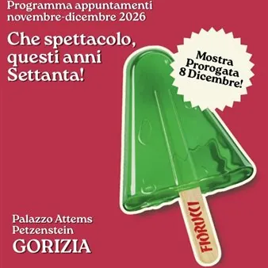

da sab 5 dic a mar 8 dic
“Italia Settanta. La creatività come antidoto. Arte Moda Design” - Eventi collaterali Dicembre
A corredo della mostra "Italia settanta. La creatività come antidoto. Arte moda design", allestita a Palazzo Attems Petzeinstein, anche per il mese di dicembre a Gorizia sono in programma i seguenti eventi collaterali. giovedì 3 dicembre ore 18.00 – visita guidata a raccolta…
 Indicazioni
Indicazioni
- Costi e prenotazioni
- Costo non indicato · Prenotazione non indicata
- Programma
- Programma da verificare. Apri la fonte ufficiale per orari e possibili aggiornamenti.
- In caso di maltempo
- Nessuna indicazione specifica pubblicata.
- Note
- Acquisito automaticamente dalla fonte.
L’EVENTO
Descrizione completa
A corredo della mostra "Italia settanta. La creatività come antidoto. Arte moda design", allestita a Palazzo Attems Petzeinstein, anche per il mese di dicembre a Gorizia sono in programma i seguenti eventi collaterali.
giovedì 3 dicembre
ore 18.00 – visita guidata a raccolta individuale
ore 19.00 – intrattenimento musicale anni ’70 dal vivo
venerdì 4 dicembre – ore 18.00
visita guidata a raccolta individuale
sabato 5 dicembre – ore 15.00-17.00
Intrecci di Natale – Aspettando San Nicolò
Laboratorio didattico rivolto a bambini dagli 8 anni d’età. Abiti, stoffe e filati: ogni tessuto racconta una storia, anche i più piccoli ritagli possono diventare preziosi! Ispirandoci alle trame e alle decorazioni della mostra, realizziamo una ghirlanda natalizia intrecciando materiali di recupero, colori e fantasia.
domenica 6 dicembre
ore 10.00, 11.30, 15.00, 16.30, 18.00 – visita guidata alla mostra – per adulti
ore 10.30-11.30 – visita guidata alla mostra rivolta a famiglie con bambini dai 4 ai 12 anni. Un’esplorazione attiva alla mostra, per immergersi insieme nell’atmosfera di un decennio ricco di creatività
ore 11.00-12.30 – La sedia Blu
Lettura animata rivolta a bambin i dai 4 ai 10 anni.
Gli oggetti che ci circondano hanno una forma, una funzione e, a volte, una storia tutta da immaginare! A partire dall'albo illustrato “La sedia blu”, la lettura animata accompagna in un percorso tra narrazione e immaginazione. Un'occasione per guardare gli oggetti quotidiani da nuove prospettive. La lettura animata è preceduta da un'esplorazione attiva della mostra Italia Settanta.
Durante l’attività i genitori potranno seguire la visita guidata a partire dalle ore 11.30
ore 16.00-17.30 - Un albero fuori dagli schemi
Laboratorio didattico-creativo rivolto a bambini dai 4 ai 12 anni.
Geometrie e pattern colorati diventano protagonisti di uno dei simboli più iconici del Natale. Ispirandosi al linguaggio visivo degli anni Settanta e attraverso la tecnica del collage i partecipanti creano una personale e unica interpretazione dell'albero di Natale.
Durante l’attività i genitori potranno seguire la visita guidata a partire dalle 16.30
lunedì 7 dicembre
ore 10.30-13.00 - Giocattolai al lavoro
Laboratorio creativo di costruzione rivolto a famiglie con bambini dai 4 ai 12 anni
Come nasce un giocattolo? Quali forme, materiali e meccanismi lo rendono interessante e divertente? Grandi e piccoli si cimentano in un'esperienza unica di progettazione e costruzione di personali giocattoli in legno e cartone.
Il laboratorio è preceduto da un'esplorazione attiva della mostra Italia Settanta
ore 10-30-13.00 – Facce da anni Settanta
Truccabimbi ispirato ai magici e coloratissimi anni Settanta, rivolto a famiglie con bambini dai 4 ai 12 anni
ore 15.30-16.30 – visita guidata alla mostra rivolta a famiglie con bambini dai 4 ai 12 anni. Un’esplorazione attiva alla mostra, per immergersi insieme nell’atmosfera di un decennio ricco di creatività
ore 16.30-17.30 – Storie di calzini e altri oggetti chiacchieroni
Spettacolo di lettura teatrale, rivolto a bambini dagli 8 ai 13 anni
E se gli oggetti potessero parlare e raccontare le proprie avventure? Uno spettacolo di lettura teatrale che dà voce agli oggetti quotidiani, trasformandoli in protagonisti di storie sorprendenti.
martedì 8 dicembre
ore 10.00-11.30 – Accendiamo il Natale degli anni Settanta
Come si trasforma un oggetto quotidiano quando la luce diventa protagonista? Attraverso la sperimentazione con materiali, trasparenze e giochi di luce, progettiamo una lanterna natalizia ispirata all’estetica degli anni Settanta.
Durante l’attività i genitori potranno seguire la visita guidata a partire dalle 10.00
ore 16.00-17.30 – Missione Design
Caccia al tesoro, rivolta a famiglie con bambini dai 4 ai 12 anni
Una mostra da esplorare con occhi curiosi, alla ricerca di dettagli, forme e oggetti fuori dall'ordinario. Attraverso una caccia al tesoro grandi e piccoli affrontano insieme prove di osservazione, enigmi e missioni.
Al termine, cioccolata calda per tutti
Per le visite guidate agli adulti , ingresso libero fino ad esaurimento posti
Accesso consentito con il biglietto d'ingresso alla mostra
Per le attività rivolte ai bambini : prenotazioni a didattica.musei.erpac@regione.fvg.it, Tel. 0481 385335
La mostra sarà visitabile fino all'8 dicembre nei seguenti orari:
da lunedì a domenica 9.00 – 19.00
giovedì – orario prolungato 9.00 – 22.00
Contatti: didatticamusei.erpac@regione.fvg.it / 0481 285335
Informazioni e tariffe QUI
Gli anni Settanta si distinguono infatti per la straordinaria pluralità dei linguaggi artistici e per il venir meno di una direzione unitaria della ricerca. Accanto alle esperienze concettuali, che privilegiano il progetto e l’idea, si sviluppano pratiche che analizzano criticamente i fondamenti della pittura, mentre altre invadono lo spazio attraverso installazioni e interventi ambientali. Tra memoria e sperimentazione, citazione e innovazione, il decennio ridefinisce profondamente i modelli del fare artistico. La selezione espositiva di arti visive – strutturata a partire dalle ambientazioni di moda e design - mette in relazione esperienze eterogenee: dagli echi della stagione Pop e delle ricerche degli anni Sessanta fino a pratiche che anticipano le sensibilità degli anni Ottanta, evidenziando continuità e trasformazioni all’interno di un quadro non lineare.
IL PROGRAMMA
Programma e orari
Appuntamenti raccolti dalle fonti elencate. Dove manca un orario, non è ancora disponibile in questa scheda.
Programma pubblicato
- ore 18.00
- ore 19.00 – intrattenimento musicale anni ’70 dal vivo
- ore 10.00, 11.30, 15.00, 16.30, 18.00 – visita guidata alla mostra – per adulti
- ore 10.30-11.30 – visita guidata alla mostra rivolta a famiglie con bambini
- ore 11.00-12.30 – La sedia Blu
- ore 16.00-17.30 - Un albero fuori dagli schemi
- ore 10.30-13.00 - Giocattolai al lavoro
- ore 15.30-16.30 – visita guidata alla mostra rivolta a famiglie con bambini
- ore 16.30-17.30 – Storie di calzini e altri oggetti chiacchieroni
- ore 10.00-11.30 – Accendiamo il Natale degli anni Settanta
- ore 16.00-17.30 – Missione Design
INFORMAZIONI UTILI
Prima di partire
- Controllare la fonte prima di partire.
ORGANIZZAZIONE